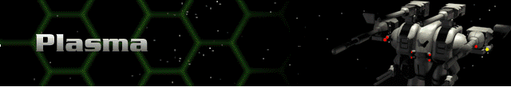

Legend:
Range – the maximum distance, in hexes, over which the weapon can fire.
Rounds – the number of times the weapon can fire per turn; note that some weapons fire bursts of shots with a single firing action.
Energy – total energy cost in battery or reactor power to fire the weapon once.
SDam – the total damage the weapon inflicts on the facing shield side of a target.
ADam – the total damage a weapon inflicts on the target’s armor if no shields are up.
Tech – the Technology Level at which the weapon is acquired.
Plasma Weapons |
Description |
Ammo |
Range |
Rounds |
Energy |
SDam |
ADam |
Tech |
Plasma Cannon |
The first of the heavy energy weapons, the Plasma Cannon consumes huge amounts of energy, but delivers terrific blows to shields and armor. |
na |
9 |
1 |
50 |
150 |
75 |
3 |
Heavy Plasma Cannon |
This is simply a twin cannon that shares a single barrel. The combined shot is terrifying and can often down an enemy Cybrid in a single blast. |
na |
9 |
1 |
75 |
300 |
150 |
3 |
Plasma Beam |
A variant of the heavy plasma cannon that uses advanced technology to keep the emerging plasma from being dispersed, thereby increasing range. |
na |
12 |
1 |
60 |
270 |
135 |
7 |
Plasma Mortar |
Combines the usefulness of the Blast Mortar with the penetrating damage of plasma for a superior indirect fire weapon. |
na |
12 |
2 |
16 |
80 |
40 |
7 |
Fusion Flamer |
A second generation of plasma technology that delivers a tremendous punch, especially against a foe that has lost its shields. |
na |
9 |
1 |
30 |
128 |
96 |
8 |
Fusion Cannon |
Though expensive and very power hungry, the Fusion Cannon can deliver in one gun what once took an entire Herc’s payload. |
na |
9 |
1 |
45 |
192 |
128 |
8 |
Fusion Annihilator |
The most terrifying weapon ever designed, this delivers a single blast that will usually destroy any Cybrid. |
na |
9 |
1 |
60 |
288 |
192 |
8 |
Fusion Mortar |
Takes advanced fusion technology and applies it to the Plasma Mortar. It is without peer as an indirect energy weapon |
24 |
12 |
2 |
18 |
108 |
72 |
10 |
Fusion Gatling |
A rapid-fire fusion cannon that can deal with shielded or unshielded targets with equal ease. It requires significant power. |
na |
9 |
4 |
15 |
90 |
60 |
12 |